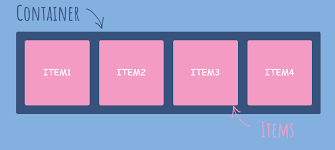
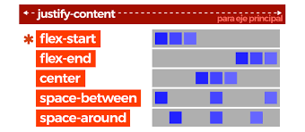
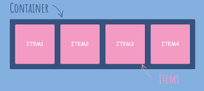
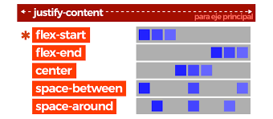

Conceptos Básicos de flexbox:
El Módulo de Caja Flexible, comúnmente llamado flexbox, fue diseñado como un modelo unidimensional de layout, y como un método que pueda ayudar a distribuir el espacio entre los ítems de una interfaz y mejorar las capacidades de alineación.
Qué es el flexbox ?. Durante mucho tiempo, las únicas herramientas disponibles para crear diseños CSS y posicionar elementos con buena compatibilidad entre browsers eran float y position. Sin embargo, estas herramientas tienen algunas limitaciones muy frustrantes, especialmente cuando se trata de responsividad. Algunas tareas que consideramos básicas en un diseño, como centrar verticalmente un elemento secundario en relación con un elemento principal o hacer que los elementos secundarios ocupen la misma cantidad de espacio, o que las columnas tengan el mismo tamaño independientemente de la cantidad de contenido interno, fueron imposibles. o muy difícil de manejar con floats o position, al menos de forma práctica y flexible. La herramienta flexbox (de Flexible Box) fue creada para hacer estas tareas más sencillas y funcionales: los secundarios de un elemento con flexbox se pueden posicionar en cualquier dirección y pueden tener dimensiones flexibles para adaptarse.

 


